後台:商品分類、網關轉發微服務、跨域
SpringBoot微服務項目筆記-03
後台頁面
別的項目學過了，這邊快速跳過，只記幾個新知識
計算屬性與監聽器
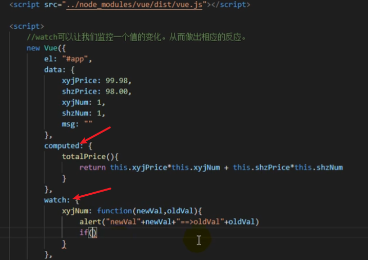
過濾器
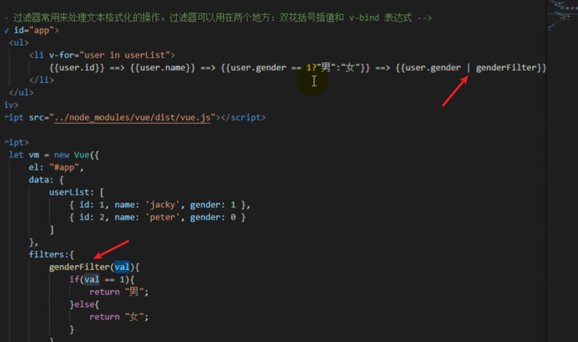
組件化
可以復用的模板
- 沒有el屬性，不與頁面中的元素綁定
- template就是他的HTML模板
- data()必須是一個函數而非物件
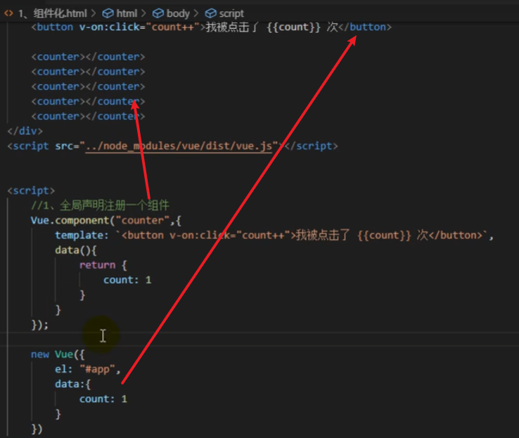
- 局部組件
- 用componments聲明，其中的key名就是標簽名

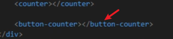
生命週期
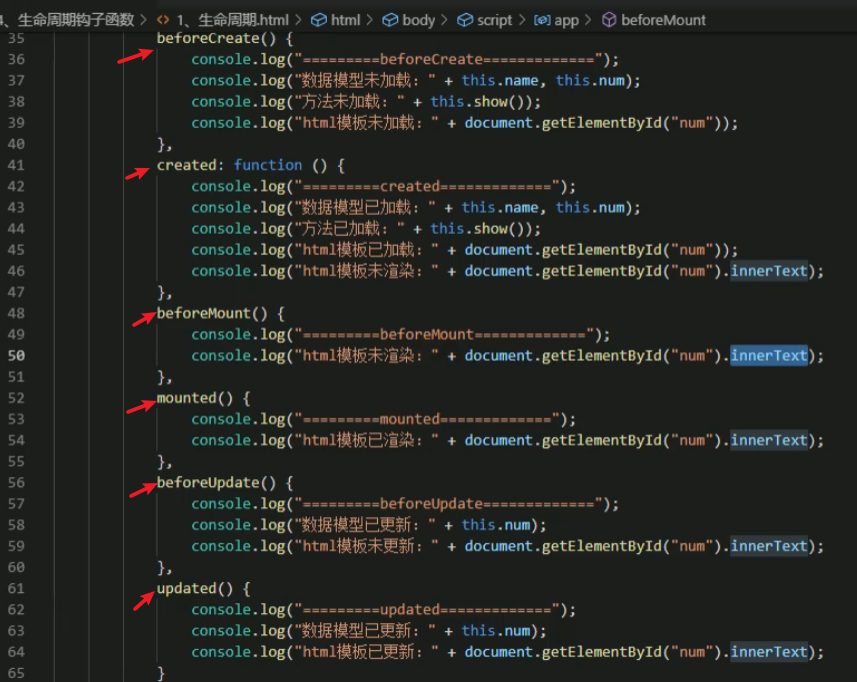
腳手架創建表單
- 之前這邊手動要先去router創建右邊的導航欄，腳手架可以用可視化工具直接創造，非常方便
- 自己要實現的部分只剩接後端API的網址與資料呈現
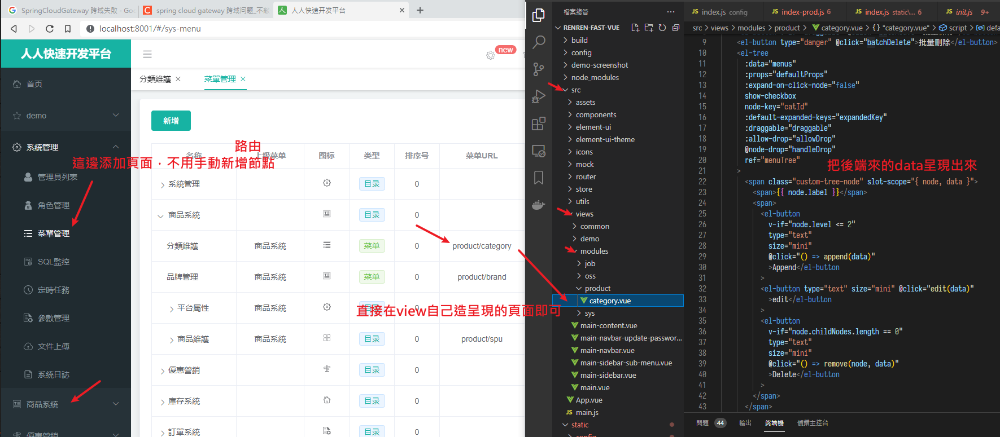
javax問題
- 啟動renren-fast服務時因為引用了common模組(為了讓後台的server也能上nacos服務發現)，又出了點問題，排查了半天
package javax.validation.constraints does not exist
解法:
<dependency>
<groupId>org.springframework.boot</groupId>
<artifactId>spring-boot-starter-validation</artifactId>
</dependency>
- 我感覺人人開源這個項目已經跟不上時代了，網路上目前2022年1月比較推薦的是若依腳手架，他這個star超高全站第2，也有一直在維護，issue處理很積極，有機會嘗試看看
- https://gitee.com/y_project/RuoYi
後端
- 現在要實現在後台檢視商品列表功能，進到product模組的controller，寫查詢的控制器與服務、實現類
- 要返回的資料是這種表格
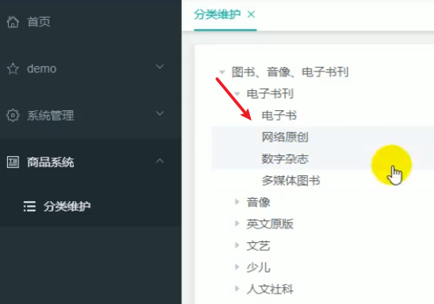
- 三級樹形列表，老師這邊一次sql查出全部資料然後用stream工具類操作賦好值，實在太強。我想看懂就花了大半天，還是老實for循環，或是多查幾次SQL吧…
/**
* 三級樹型列表
*
* @return
*/
@Override
public List<CategoryEntity> listTree() {
// 查所有分類
List<CategoryEntity> entities = baseMapper.selectList(null);
// lamdba表達式左邊形參，右邊方法
List<CategoryEntity> levelMenus = entities.stream()
.filter(e -> e.getParentCid() == 0) // 先篩出第一級，set他的子級，調用下面的方法
.map((menu) -> {
menu.setChildren(findChildren(menu, entities));
return menu;
})
.sorted(Comparator.comparingInt(menu -> (menu.getSort() == null ? 0 : menu.getSort())))
.collect(Collectors.toList());
return levelMenus;
}
/**
* 找出所有子級並賦上
*
* @param root
* @param all
* @return
*/
private List<CategoryEntity> findChildren(CategoryEntity root, List<CategoryEntity> all) {
// all是全部的品項
List<CategoryEntity> children = all.stream().filter(categoryEntity -> {
return categoryEntity.getParentCid().equals(root.getCatId());
}).map(categoryEntity -> {
// 找到子菜單(遞歸)
categoryEntity.setChildren(findChildren(categoryEntity, all));
return categoryEntity;
}).sorted((menu, menu2) -> {
// 菜單的排序
return (menu.getSort() == null ? 0 : menu.getSort()) - (menu2.getSort() == null ? 0 : menu2.getSort());
}).collect(Collectors.toList());
return children;
}
設定網關
- 首先把後台前端的
baseUrl改了，讓他指向網關的阜88- 這要理一下，
baseUrl指的是後台頁面發出去的請求 - 後台的
renren-fast-vue本身啟動占用的還是8000或8001
- 這要理一下，
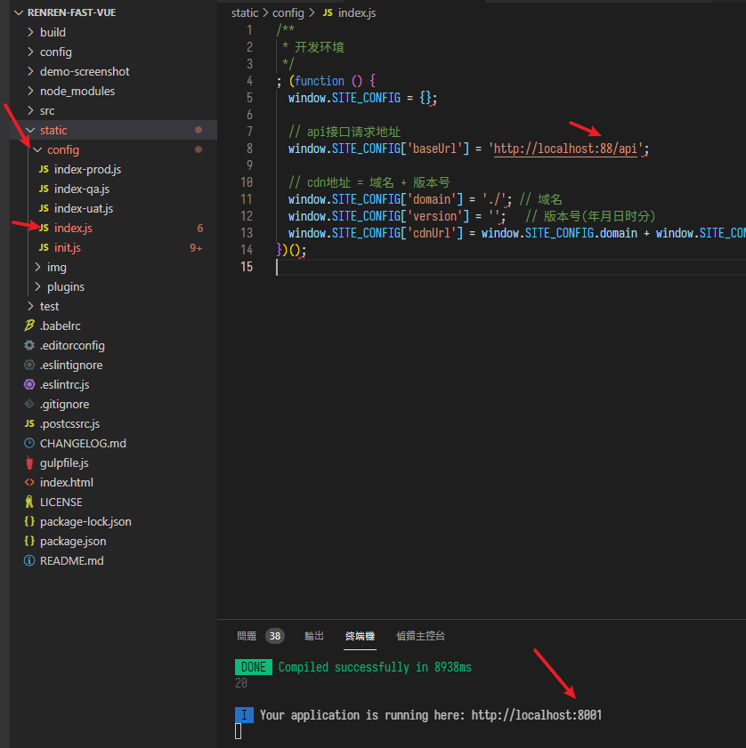
- 而後台的server(renren-fast)啟動的阜無所謂，重點是這個服務要註冊到nacos
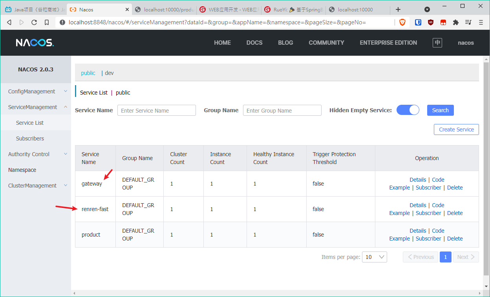
- 然後在網關中設定轉發
uri是要去的資源名，就是微服務名(同模組名，但有人是用包名要注意可能有-或.的差別)，lb://是負載均衡的意思predicates斷言，判斷的條件，網址長這樣的人
spring:
cloud:
gateway:
routes:
- id: admin_route
uri: lb://renren-fast
predicates:
- Path=/api/**
filters:
- =/api/(?<segment>.*),/renren-fast/$\{segment}
- 然後用
RewritePath重寫路徑，因為他本來是這樣

RewritePath正則
- 我因為網關轉發寫錯又找好久
- 重點一:
predicates後面的/**千萬別忘寫 - 重點二: 匹配精確度高的要放上面(類似多層if的概念)
- 重點一:
spring:
cloud:
gateway:
routes:
- id: product_route
uri: lb://product
predicates:
- Path=/api/product/**
filters:
- RewritePath=/api/(?<segment>.*),/$\{segment}
- 第一個
?<segment>是要切出來的，可以叫任何自訂的變數名 - 緊接的
.*表示匹配幾次，這裡是無數次也就是全部 - 然後括號)後的
,後面放的是重寫成啥樣，接去給微服務 $\是因為yaml格式怕它當成編譯時的變數所以寫成這樣，相當於運行時的$
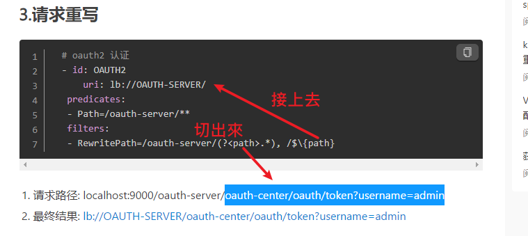
- 也可以用StripPrefix，切掉幾級
filters:
- StripPrefix=1
- 都設定完後，相當於請求訪問都到88找網關，網關藉由服務發現轉介給其他服務
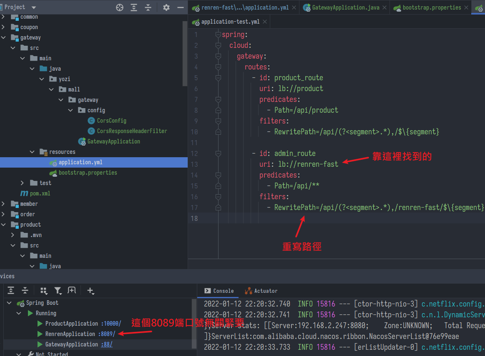
- 到這裡登入畫面應該又能成功顯示驗證碼了，然而還沒完
跨域問題
- 老朋友又來了，除了簡單請求，複雜的例如ajax請求只要有以下三種情況都會引起跨域問題:
- 協議不同:http與https
- 端口不同:9528與8201
- ip不同
- 解法很多例如:
- 使用nginx反向代理
- 後端Controller註解
@CrossOrigin - 後端掛一個全局過濾器，這邊先用這個
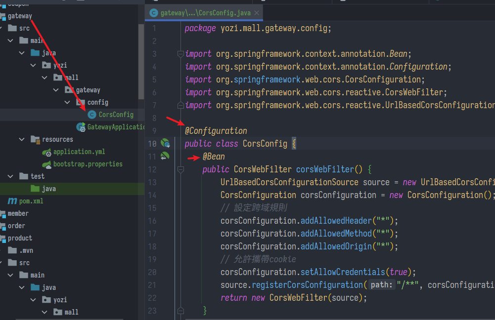
- 腳手架後台server自帶一個跨域，避免多重請求一樣會報錯要關掉
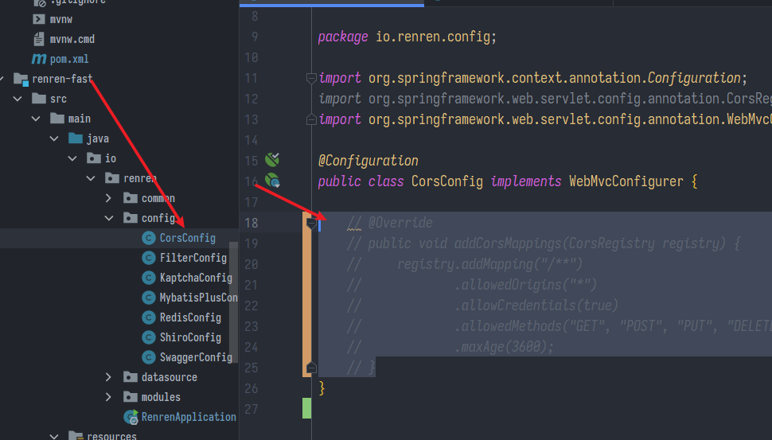
- 結果老師教的方法不行，網路上試了幾個也不行，找半天最後終於找到一個可以的，需要造2個類(PS.版本spring boot=2.3.2.RELEASE，cloud=Hoxton.SR9)
@Configuration
public class CorsConfig {
@Bean
public CorsResponseHeaderFilter corsResponseHeaderFilter() {
return new CorsResponseHeaderFilter();
}
@Bean
public CorsWebFilter corsWebFilter() {
UrlBasedCorsConfigurationSource source = new UrlBasedCorsConfigurationSource();
CorsConfiguration corsConfiguration = new CorsConfiguration();
corsConfiguration.addAllowedHeader("*");
corsConfiguration.addAllowedMethod("*");
corsConfiguration.addAllowedOrigin("*");
corsConfiguration.setAllowCredentials(true);
corsConfiguration.setMaxAge(600L);
source.registerCorsConfiguration("/**", corsConfiguration);
return new CorsWebFilter(source);
}
}
public class CorsResponseHeaderFilter implements GlobalFilter, Ordered {
@Override
public int getOrder() {
// 指定此過濾器位於NettyWriteResponseFilter之後
// 即待處理完響應體後接着處理響應頭
return NettyWriteResponseFilter.WRITE_RESPONSE_FILTER_ORDER + 1;
}
@Override
@SuppressWarnings("serial")
public Mono<Void> filter(ServerWebExchange exchange, GatewayFilterChain chain) {
return chain.filter(exchange).then(Mono.defer(() -> {
exchange.getResponse().getHeaders().entrySet().stream()
.filter(kv -> (kv.getValue() != null && kv.getValue().size() > 1))
.filter(kv -> (kv.getKey().equals(HttpHeaders.ACCESS_CONTROL_ALLOW_ORIGIN)
|| kv.getKey().equals(HttpHeaders.ACCESS_CONTROL_ALLOW_CREDENTIALS)))
.forEach(kv ->
{
kv.setValue(new ArrayList<String>() {{
add(kv.getValue().get(0));
}});
});
return chain.filter(exchange);
}));
}
}
- 最後終於成功了，相當於透過網關轉發請求給微服務然後響應回去
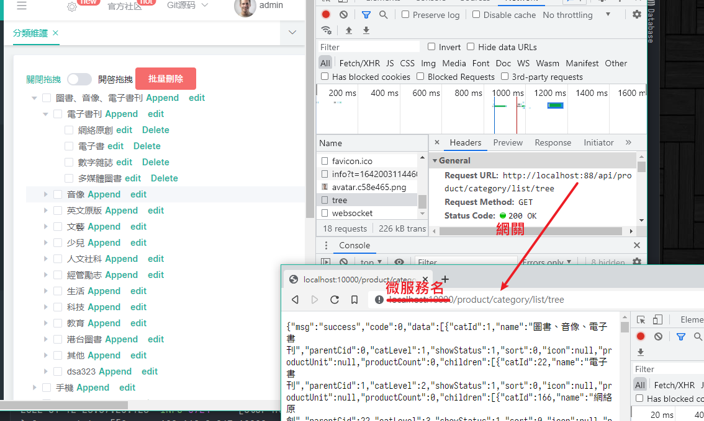
spring boot灰色圖案
- 困擾我許久的小問題
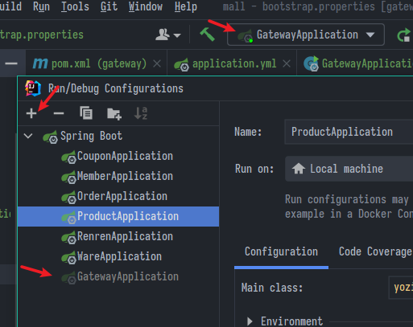
- 按+號手動添加即可
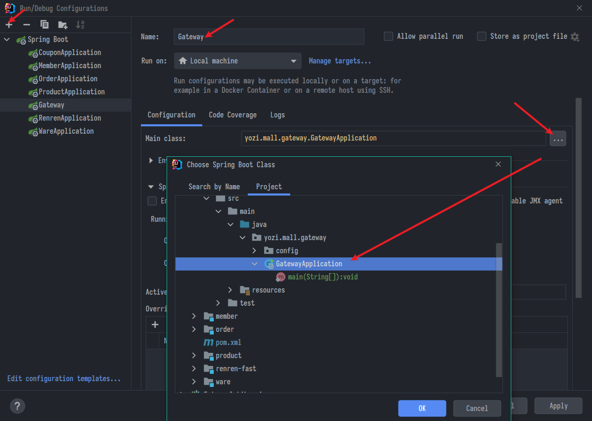
- 並且這玩意原來可以拖動排序，換個辨識度高的名字+排序好，測試時批次啟動選取更方便
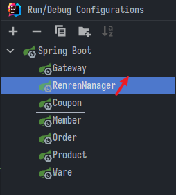
其他功能
大多是前端模板的使用，有些我直接複製貼上了
邏輯刪除
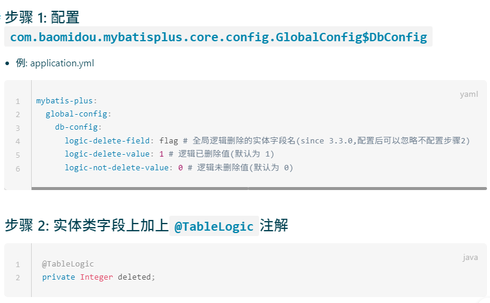
- 由於這裡是反的，1才是要顯示，所以手動在註解中指定delval
- 通常是叫is_deleted之類的欄位
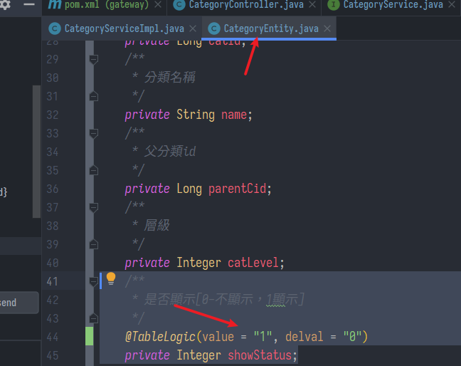
- 前端:
- 綁確認提示框
.then()對接刪除API- 刷新頁面
remove(node, data) {
const ids = [data.catId];
this.$confirm(`是否刪除【${data.name}】分類?`, "提示", {
confirmButtonText: "確定",
cancelButtonText: "取消",
type: "warning",
})
.then(() => {
this.$http({
url: this.$http.adornUrl("/product/category/delete"),
method: "post",
data: this.$http.adornData(ids, false),
}).then(({ data }) => {
this.$message({
message: "分類刪除成功",
type: "success",
});
//刷新出新的分類
this.getMenus();
//設置需要預設展開的分類
this.expandedKey = [node.parent.data.catId];
});
})
.catch(() => {});
console.log("remove", node, data);
},
新增與修改節點
- 前端:
- 綁一個跳出的修改表單，get回顯表格
- 對接後端API
- 刷新頁面
edit(data) {
console.log("要修改的數據", data);
this.dialogType = "edit";
this.title = "修改分類";
this.dialogVisible = true;
//發送請求獲取當前節點最新的數據
this.$http({
url: this.$http.adornUrl(`/product/category/info/${data.catId}`),
method: "get",
}).then(({ data }) => {
//請求成功
console.log("要回顯的數據", data);
this.category.name = data.data.name;
this.category.catId = data.data.catId;
this.category.icon = data.data.icon;
this.category.productUnit = data.data.productUnit;
this.category.parentCid = data.data.parentCid;
this.category.catLevel = data.data.catLevel;
this.category.sort = data.data.sort;
this.category.showStatus = data.data.showStatus;
/**
* parentCid: 0,
catLevel: 0,
showStatus: 1,
sort: 0,
*/
});
},
append(data) {
console.log("append", data);
this.dialogType = "add";
this.title = "添加分類";
this.dialogVisible = true;
this.category.parentCid = data.catId;
this.category.catLevel = data.catLevel * 1 + 1;
this.category.catId = null;
this.category.name = "";
this.category.icon = "";
this.category.productUnit = "";
this.category.sort = 0;
this.category.showStatus = 1;
},
submitData() {
if (this.dialogType === "add") {
this.addCategory();
}
if (this.dialogType === "edit") {
this.editCategory();
}
},
//修改三級分類數據
editCategory() {
const { catId, name, icon, productUnit } = this.category;
this.$http({
url: this.$http.adornUrl("/product/category/update"),
method: "post",
data: this.$http.adornData({ catId, name, icon, productUnit }, false),
}).then(({ data }) => {
this.$message({
message: "分類修改成功",
type: "success",
});
//關閉對話框
this.dialogVisible = false;
//刷新出新的分類
this.getMenus();
//設置需要預設展開的分類
this.expandedKey = [this.category.parentCid];
});
},
//添加三級分類
addCategory() {
console.log("提交的三級分類數據", this.category);
this.$http({
url: this.$http.adornUrl("/product/category/save"),
method: "post",
data: this.$http.adornData(this.category, false),
}).then(({ data }) => {
this.$message({
message: "分類保存成功",
type: "success",
});
//關閉對話框
this.dialogVisible = false;
//刷新出新的分類
this.getMenus();
//設置需要預設展開的分類
this.expandedKey = [this.category.parentCid];
});
},
拖曳改變排序
這個太麻煩，草草略過
-
做開關控制拖曳許可
-
判斷擺放的節點深度
-
把完整的順序
("catId":23,"sort":0,"parentCid":1),...傳給後端- 因為可能改變上下層級，所以共傳自己、排序、父節點
-
後端用list去接、調用
updateBatchById(list)方法
batchSave() {
this.$http({
url: this.$http.adornUrl("/product/category/update/sort"),
method: "post",
data: this.$http.adornData(this.updateNodes, false),
}).then(({ data }) => {
this.$message({
message: "分類順序等修改成功",
type: "success",
});
//刷新出新的分類
this.getMenus();
//設置需要預設展開的分類
this.expandedKey = this.pCid;
this.updateNodes = [];
this.maxLevel = 0;
// this.pCid = 0;
});
},
handleDrop(draggingNode, dropNode, dropType, ev) {
console.log("handleDrop: ", draggingNode, dropNode, dropType);
//1、當前節點最新的父節點id
let pCid = 0;
let siblings = null;
if (dropType == "before" || dropType == "after") {
pCid =
dropNode.parent.data.catId == undefined
? 0
: dropNode.parent.data.catId;
siblings = dropNode.parent.childNodes;
} else {
pCid = dropNode.data.catId;
siblings = dropNode.childNodes;
}
this.pCid.push(pCid);
//2、當前拖拽節點的最新順序，
for (let i = 0; i < siblings.length; i++) {
if (siblings[i].data.catId == draggingNode.data.catId) {
//如果遍歷的是當前正在拖拽的節點
let catLevel = draggingNode.level;
if (siblings[i].level != draggingNode.level) {
//當前節點的層級發生變化
catLevel = siblings[i].level;
//修改他子節點的層級
this.updateChildNodeLevel(siblings[i]);
}
this.updateNodes.push({
catId: siblings[i].data.catId,
sort: i,
parentCid: pCid,
catLevel: catLevel,
});
} else {
this.updateNodes.push({ catId: siblings[i].data.catId, sort: i });
}
}
//3、當前拖拽節點的最新層級
console.log("updateNodes", this.updateNodes);
},
updateChildNodeLevel(node) {
if (node.childNodes.length > 0) {
for (let i = 0; i < node.childNodes.length; i++) {
const cNode = node.childNodes[i].data;
this.updateNodes.push({
catId: cNode.catId,
catLevel: node.childNodes[i].level,
});
this.updateChildNodeLevel(node.childNodes[i]);
}
}
},
allowDrop(draggingNode, dropNode, type) {
//1、被拖動的當前節點以及所在的父節點總層數不能大於3
//1）、被拖動的當前節點總層數
console.log("allowDrop:", draggingNode, dropNode, type);
//
this.countNodeLevel(draggingNode);
//當前正在拖動的節點+父節點所在的深度不大於3即可
let deep = Math.abs(this.maxLevel - draggingNode.level) + 1;
console.log("深度：", deep);
// this.maxLevel
if (type == "inner") {
// console.log(
// `this.maxLevel：${this.maxLevel}；draggingNode.data.catLevel：${draggingNode.data.catLevel}；dropNode.level：${dropNode.level}`
// );
return deep + dropNode.level <= 3;
} else {
return deep + dropNode.parent.level <= 3;
}
},
countNodeLevel(node) {
//找到所有子節點，求出最大深度
if (node.childNodes != null && node.childNodes.length > 0) {
for (let i = 0; i < node.childNodes.length; i++) {
if (node.childNodes[i].level > this.maxLevel) {
this.maxLevel = node.childNodes[i].level;
}
this.countNodeLevel(node.childNodes[i]);
}
}
},
/**
* 修改排序
*/
@RequestMapping("/update/sort")
//@RequiresPermissions("product:category:update")
public R updateSort(@RequestBody List<CategoryEntity> list) {
categoryService.updateBatchById(list);
return R.ok();
}
上次修改於 2022-01-20